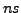
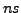

In the last ten years there has been considerable interest in iterative solvers for linear systems of equations with multiple right-hand sides. There exist mainly two basic approaches: (i) using a seed system that reduces cost when a ``normal'' Krylov space method is subsequently applied to other right-hand sides and (ii) generalizing Krylov space methods to block Krylov space methods that treat all right-hand sides simultaneously (which requires all to be available at once). A typical and seemingly straightforward method of the second kind is block GMRES.
Block Krylov space methods have two major potential advantages over
ordinary Krylov space methods. Firstly, when they are applied to a
system with, say,  right-hand sides, typically
right-hand sides, typically  matrix-vector
products can be computed at once. On most of today's computers, even
on those with a single processor, this takes considerably less time
than to compute
matrix-vector
products can be computed at once. On most of today's computers, even
on those with a single processor, this takes considerably less time
than to compute  times a single matrix-vector product.
times a single matrix-vector product.
Secondly, after  iterations with a total of  matrix-vector
products, the dimension of the search space for the approximate
solutions can be up to
iterations with a total of  matrix-vector
products, the dimension of the search space for the approximate
solutions can be up to  times larger than if we apply the ordinary
Krylov space solver individually to all
times larger than if we apply the ordinary
Krylov space solver individually to all  right-hand sides.
Therefore the cost per system may asymptotically decrease by as much
as a factor of
right-hand sides.
Therefore the cost per system may asymptotically decrease by as much
as a factor of  .
Unfortunately, in practice we often see little benefit from this
potential speedup.
.
Unfortunately, in practice we often see little benefit from this
potential speedup.
There is, however, another closely related aspect: the  approximate
solutions obtained after
approximate
solutions obtained after  steps may approximately live in an affine
space of much smaller dimension than , because the corresponding
residuals may be approximately linear dependent.
By detecting this dependency and taking appropriate action (normally
called ``deflation'', although this notion is used in other situations
too), we can reduce the number of matrix-vector products needed
significantly.
steps may approximately live in an affine
space of much smaller dimension than , because the corresponding
residuals may be approximately linear dependent.
By detecting this dependency and taking appropriate action (normally
called ``deflation'', although this notion is used in other situations
too), we can reduce the number of matrix-vector products needed
significantly.
In exact arithmetic, deflation and its effect on the minimum dimension
of the block Krylov space that contains the exact solution is well
understood. It is related to the so-called block grade of the system,
which was the topic of our talk at Copper Mountain in 2006.
It is also known how, in exact arithmetic, deflation can be built
into block GMRES. In particular, deflation can be checked for and taken
care of in the block Arnoldi process; there is no need to check directly
(at high cost) for the linear dependence of the  residuals except at the
beginning and at restarts. However, Julien Langou pointed out at the above
mentioned talk that, in practice, i.e., in finite precision arithmetic,
block GMRES is not as effective as one would hope for, even if the
deflation process is adapted to treat nearly linear dependent situations
in an analogous way.
(He had pointed out this before in his talk at Copper Mountain in 2004.)
We had observed similarly disappointing outcomes in small examples we
had tried.
residuals except at the
beginning and at restarts. However, Julien Langou pointed out at the above
mentioned talk that, in practice, i.e., in finite precision arithmetic,
block GMRES is not as effective as one would hope for, even if the
deflation process is adapted to treat nearly linear dependent situations
in an analogous way.
(He had pointed out this before in his talk at Copper Mountain in 2004.)
We had observed similarly disappointing outcomes in small examples we
had tried.
In this talk we will propose a completely different deflation strategy based on checking the block quasi-residuals for approximate linear dependence. To achieve a reduction of the number of matrix-vector products deflation still needs to be enforced in the block Arnoldi process, however.